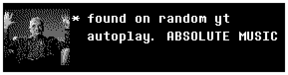

GLEACH JALBUM
I really like this album. It incorporates a lot of that
the beginning of the jalbum was prettj jarring but I like jarring.
Favourite track: why
Reason: I'm a bit of quirk chungus freaky freak 😝
One Raga to a Disco Beat

Footnotes
I mean footnote because there's only one
1. "IS THAT TONY RADIATIO yes
let's give this happy little footnote a happy little friend happy
2. lego people live in houses of their own skin
KILL IT WITH FIRE